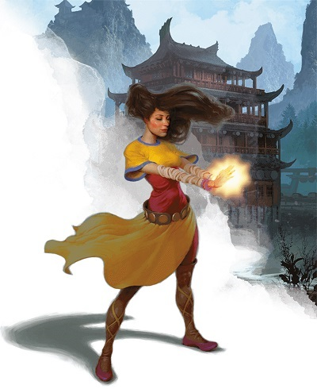
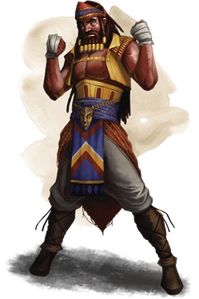

Le moine D&D 5 pour les nuls
Vous jouez un moine, un guerrier ascétique qui se bat en utilisant son corps et le pouvoir de son esprit. Votre formation spécialisée vous permet aussi de manipuler le ki, une force fondamentale d'énergie vitale qui habite tous les êtres vivants.
Les capacités du moine ressemblent beaucoup aux représentations cinématographiques d'artistes martiaux asiatiques comme Bruce Lee, Jet Li et Jackie Chan (selon que votre personnage est sérieux ou comique). Mais si bien le moine de D&D est définitivement inspiré des moines combattants de la pop-culture, des joueurs cherchant une représentation plus réaliste de ces guerriers ascétiques de l'histoire asiatique peuvent effectuer des recherches sur les moines Shaolin de la province du Henan en Chine, sur le Japon féodal ou sur les moines hindous de Naga Sadhu au nord de l'Inde. L'Europe médiévale pour sa part comptait peu de moines guerriers, mis à part les ordres de chevaliers qui étaient aussi des moines, comme l'ordre des Hospitaliers. Pensez aussi au plus célèbre moine hors-la-loi d'Europe, Petit Jean, le compagnon de Robin des Bois. Enfin, si vous n'avez pas le temps de faire des recherches et que vous voulez simplement jouer, inspirez-vous également de l'ordre pseudo-spirituel et monastique des Jedi de Star Wars pour votre personnage.
Créer votre moine
Sans aller jusqu'à parler d'optimisation, la première étape pour bien jouer votre classe est de construire votre personnage efficacement.
- Choisissez votre race. N'importe laquelle peut faire un bon moine, mais vous devriez choisir une race qui améliore vos valeurs de Dextérité ou de Sagesse. Les humains font d'excellents moines, et leurs valeurs de caractéristique bien arrondies conviennent parfaitement aux multiples compétences du moine. Les elfes font de bons moines grâce à leur bonus en Dextérité, et le bonus de Sagesse des elfes des bois ne fait que renforcer leur aptitude.
- Choisissez la classe de moine (évidemment !).
- Choisissez des compétences qui correspondent à ce que vous voulez que soit votre personnage. Les compétences qui jouent sur vos points forts sont utiles, mais pensez aussi à compenser certaines de vos faiblesses afin d'obtenir un personnage un peu plus équilibré.
- Pensez au rôle que vous voulez remplir au sein du groupe (Offensif, Défensif ou Soutien). Nous verrons cela plus en détail ci-dessous.
- Choisissez vos valeurs de caractéristique. Généralement, vous mettrez votre valeur de caractéristique la plus élevée en Dextérité, et votre deuxième plus forte en Sagesse afin que de pouvoir utiliser pleinement vos attaques physiques et vos capacités de ki. Si vous voulez vous concentrer sur le ki et le mysticisme plutôt que sur la force physique, placez votre valeur de caractéristique la plus élevée en Sagesse et votre deuxième plus forte en Dextérité.
- Choisissez un historique qui colle avec le concept de votre personnage : un moine qui a servi comme soldat mais qui a été désillusionné par les horreurs de la guerre abordera la vie et le combat d'une manière complètement différente d'un moine qui a grandi comme artiste dans un cirque à Waterdeep.
- Pour votre équipement, choisissez :
- une épée courte ou n'importe quelle arme courante
- un sac d'exploration souterraine ou un sac d'explorateur
- 10 fléchettes
Quel type de moine ?
Les moines sont des combattants au corps à corps qui ressemblent à un guerrier basé sur la Dextérité ou à un rôdeur, mais ils sont aussi de légers et agiles combattants qui utilisent leurs incroyables capacités de mouvement pour compenser leurs faibles points de vie et leur classe d'armure. Les moines sont plus aptes à assumer un rôle offensif dans leur groupe, utilisant cette grande mobilité pour engager les ennemis avec un barrage de coups rapides, puis s'échappant par sécurité avant que leurs ennemis puissent riposter. Cependant, certains moines peuvent aussi assumer un rôle défensif, utilisant leurs capacités spéciales pour rediriger les attaques et même utiliser leur maîtrise du ki pour tromper la mort. Enfin, une sous-classe de moine permet à ceux qui sont adeptes des arts de l'ombre d'assumer un rôle de soutien au sein de leur groupe, en faisait des ninjas qui frappent dans l'ombre.
Votre rôle au sein du groupe ne se définira probablement pas avant au moins le niveau 3, lorsque vous choisissez votre tradition monastique (aussi appelée sous-classe), mais vous pouvez décider de la sous-classe que vous choisirez dès maintenant, afin de pouvoir planifier le thème, l'esthétique ou la construction mécanique de votre personnage.
Offensif
En tant que moine offensif, vous utiliserez votre grande mobilité pour engager des ennemis et infliger des dégâts considérables avec un risque limité de représailles. Vous n'avez par contre pas beaucoup de moyens de défense, donc vous devrez compter sur des capacités comme Déplacement aérien pour vous sortir du pétrin. Les sous-classes offensives sont la voie des quatre éléments et la voie de la paume. Les moines de la paume se concentrent sur le combat rapproché, tandis que ceux qui suivent la voie des quatre éléments se concentrent sur l'utilisation des arts mystiques pour le combat à distance.
Défensif
En tant que moine défensif, vous utiliserez vos capacités martiales et mystiques pour vous maintenir en vie même dans les pires circonstances en vous accordant des points de vie temporaires, en utilisant des mouvements erratiques qui vous rendent dur à toucher ou en manipulant les forces de la mort pour rester vivant. La sous-classe la plus défensive est la voie du maître ivre (Xanathar’s Guide to Everything).
Soutien
La seule sous-classe de moine de soutien est la voie de l'ombre, qui permet de se camoufler dans l'ombre avec ses alliés afin d'embusquer et d'échapper aux ennemis. Bien que cette sous-classe ne permette pas de soigner ses alliés comme beaucoup d'autres sous-classes de soutien, ses capacités discrètes peuvent transformer des situations ingérables en embuscades astucieuses.
Se battre comme un moine
Durant les trois premiers niveaux de moine, votre style de jeu sera toujours à peu près le même, peu importe le rôle que vous voulez jouer dans le groupe. Même si certains choix peuvent changer cela, comme jouer un humain et choisir un don qui défit votre rôle dès le niveau 1, jouer un moine est généralement assez simple à bas niveaux. Votre rôle sera principalement offensif avant de choisir votre sous-classe, mais prenez soin de ne pas vous faire déchirer par les ennemis, car vous n'avez ni l'armure d'un paladin ni les résistances aux dégâts d'un barbare.
Si vous jouez un humain, vous pouvez choisir un don au niveau 1. Certains sont plus ou moins puissants en fonction des types de défis que votre MD utilise, mais certaines options sont toujours bonnes :
- Les moines offensifs peuvent prendre le don Lutteur, si vous entrez dans les combats au corps à corps. Cela vous permet de vous immerger dans le fantasme d'un combattant à mains nues qui se défait se ses adversaires à coups de pied et de poing. Tireur d'élite est un bon choix pour les moines focalisés sur l'attaque à distance, car il permet d'ignorer les abris et de faire des dégâts majeurs au détriment de la précision, si nécessaire.
- Lutteur est également un choix utile pour les moines défensifs, car il vous aide à maîtriser les ennemis en les empêchant de se déplacer, ce qui bénéficie aux attaques de vos alliés.
- En tant que moine de soutien discret, vous voulez rester hors de vue aussi longtemps que possible. Le don Discret vous permet de tirer le meilleur parti de vos jets de Dextérité (Discrétion) et de rester caché même si vous échouez lors d'une attaque discrète.
Au niveau 1, vous obtenez les capacités Défense sans armure et Arts martiaux, qui définissent la classe et vous permettent de combattre efficacement sans armures et sans armes. Contrairement au trait Défense sans armure du barbare qui peut être ignoré, ces deux capacités sont importantes car vous avez peu de maîtrises d'armures et d'armes en tant que moine.
Au niveau 2, vous gagnez les capacités Ki et Déplacement sans armure, qui définissent également la classe. Déplacement sans armure vous offre une augmentation permanente de votre vitesse de déplacement qui évolue avec votre niveau de moine, avec un bonus de +9 mètres au niveau 18. La capacité Ki vous accorde trois options iconiques au niveau 2, mais interagit également avec plusieurs de vos autres traits de moine, y compris ceux accordés par votre sous-classe. Votre pool de ki est faible au départ (seulement 2 points), mais vous récupérez tous vos points ki à la fin d'un repos court ou long. Vos pouvoirs ki de départ sont un mélange d'attaque, de défense et de mobilité, avec Déluge de coups qui vous permet de réaliser deux frappes supplémentaires à mains nues dans un tour, Défense patiente qui permet d'infliger un désavantage à tous les jets d'attaque contre vous jusqu'au début de votre prochain tour, et Déplacement aérien qui permet de se désengager avec une action bonus, comme un roublard.
Au niveau 3, vous pouvez choisir votre sous-classe et obtenir une capacité spéciale en fonction de celle-ci. Voir la section ci-dessous sur votre rôle au sein du groupe pour plus d'informations. De plus, vous gagnez la capacité Parade de projectiles, qui vous permet d'utiliser votre réaction pour détourner les armes à distance, réduisant les dégâts infligés par les ennemis à distance et augmentant vos capacités offensives en vous permettant d'attraper et de lancer des projectiles.
Au niveau 4, vous gagnez Amélioration de caractéristiques ou un don. Vous devriez augmenter votre Dextérité ou votre Sagesse de 2 points, ou bien choisir un don qui convient à votre rôle en combat. Des propositions de dons vous sont faîtes ci-dessus au début de cette section. Vous bénéficiez également de la capacité Chute ralentie, qui est une capacité situationnelle qui vous permet de réduire ou d'annuler les dégâts lors d'une chute.
Au niveau 5, vous gagnez une Attaque supplémentaire chaque fois que vous prenez l'action Attaquer, doublant vos dégâts (mais cela ne vous donne pas d'attaques supplémentaires avec Déluge de coups). Vous gagnez également Frappe étourdissante, qui vous permet de dépenser du ki pour étourdir temporairement les ennemis que vous avez touchés lors d'une attaque au corps à corps avec une arme.
Offensif
Si vous choisissez la voie des quatre éléments au niveau 3, vous avez quelques choix à faire. Lorsque vous gagnez la capacité Disciple des éléments au niveau 3, vous gagnez deux disciplines élémentaires qui imitent les effets de sorts élémentaires de magicien lorsque vous dépensez des points ki pour les lancer. Premièrement, vous gagnez la discipline Lien élémentaire, qui vous permet d'effectuer des effets élémentaires mineurs. Ensuite, choisissez une autre discipline parmi :
- Crochets du serpent de feu (augmente votre allonge lors d'une attaque au corps à corps et inflige des dégâts de feu avec des attaques au corps à corps pendant 1 tour)
- Poing des quatre tonnerres (vous lancez vague tonnante)
- Poing de l'air (vous poussez une créature jusqu'à 6 mètres et infligez des dégâts)
- Ruée des esprits du vent (vous lancez bourrasque)
- Façonnage de la rivière (vous pouvez façonner l'eau et la glace, mais vous ne pouvez pas l'utiliser pour blesser ou piéger une créature)
- Frappe incandescente écrasante (vous lancez mains brûlantes)
- Fouet d'eau (vous faîtes tomber à terre une créature ou la tirez vers vous, et infligez des dégâts)
Vous apprenez des disciplines élémentaires supplémentaires en gagnant des niveaux de moines, et obtenez même accès à des disciplines plus puissantes. Votre progression pour incanter est essentiellement la même que celle d'un « lanceur 1/3 » comme le guerrier chevalier occulte ou le roublard escroc arcanique.
Si vous choisissez la voie de la paume au niveau 3, vous gagnez plusieurs effets supplémentaires que vous pouvez ajouter à vos attaques de Déluge de coups, ce qui vous permet de débiliter vos ennemis tout en combattant.
Défensif
Si vous choisissez la voie du maître ivre au niveau 3, vous gagnez une poignée de bonus de maîtrise qui aident à renforcer le fantasme d'être un moine qui aime la boisson. Vous bénéficiez également de Technique de l'ivrogne, qui vous permet de vous Désengager sans aucune action à chaque fois que vous utilisez l'attaque Déluge de coups.
Soutien
La voie de l'ombre est la seule sous-classe de soutien disponible pour les moines. Si vous avez choisi cette sous-classe au niveau 3, vous avez accès à un nombre de sorts que vous pouvez lancer en utilisant votre ki. Ces sorts peuvent aussi affecter vos alliés, comme passage sans trace, ou gêner vos ennemis comme ténèbres et silence.
Personnaliser son moine
 Les moines sont l'une des classes les moins conventionnelles de D&D, et ils regorgent de capacités excitantes sur lesquelles vous pouvez baser un personnage. Vous constaterez peut-être que l'une de vos caractéristiques de classe vous sauve constamment la vie, comme par exemple Parade de projectiles ou Chute ralentie, ou que votre Déluge de coups semble toujours infliger des coups mortels. Penchez-vous sur ces rebondissements aléatoires du destin et essayez d'infléchir le concept de votre personnage pour y intégrer vos traits préférés.
Les moines sont l'une des classes les moins conventionnelles de D&D, et ils regorgent de capacités excitantes sur lesquelles vous pouvez baser un personnage. Vous constaterez peut-être que l'une de vos caractéristiques de classe vous sauve constamment la vie, comme par exemple Parade de projectiles ou Chute ralentie, ou que votre Déluge de coups semble toujours infliger des coups mortels. Penchez-vous sur ces rebondissements aléatoires du destin et essayez d'infléchir le concept de votre personnage pour y intégrer vos traits préférés.
Comme toujours, cette aide de jeu n'est pas un guide d'optimisation. Son but n'est pas de créer un moine superpuissant, mais de vous montrer une manière simple, efficace et amusante de créer un personnage et de jouer un moine pour la toute première fois en y prenant du plaisir. Choisissez les capacités qui vous parlent, oubliez l'optimisation et jouez le personnage que vous voulez jouer. Cette aide de jeu vous aidera à créer un équilibre entre prendre du plaisir en jouant votre propre concept et prendre du plaisir en bottant le cul de vos adversaires.
Maintenant, allez frapper quelques orcs !
Basé sur un article de James Haeck, traduit par blueace